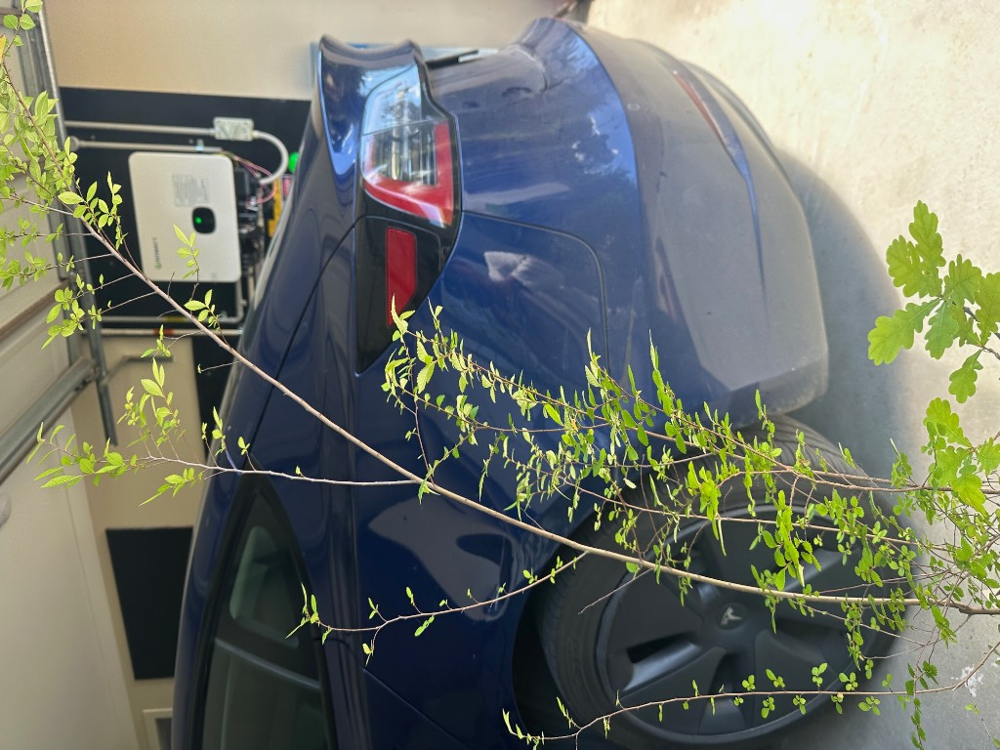

Now → first late winter
Establish outdoors, gather materials, plan chops. No emergency styling.
Bonsai
Budget soil and pots, stem and root work, training, fertiliser, and a forest — tuned for local seasons and 60–90 cm trees.
Identification
Close-ups lock this in well enough to train. Keep species separate for forest work — same kind together, different kinds alone.
Small oval leaves with fine serrations on thin, wiry stems. Several pots — your forest material.
Forest + 60–90 cm specimensDeeply lobed leaves, taller pencil trunks. Slower than elm; better as individual trees than mixed forest.
Solo upright · larger leaf scaleBig glossy serrated leaves in the barky nursery mix. Keep as one specimen; leaf reduction takes years. If you snap a leaf and get milky sap, tell me — that would shift ID toward fig.
Solo · frost-aware
Melbourne weather
Cool winters with frost risk, hot dry summers, and sharp spring growth. Deciduous elm and oak want a real outdoor winter chill. Garage storage is fine short-term; permanent indoor life is not.
| Window | Months | Do | Don’t |
|---|---|---|---|
| Late winter | Aug – mid Sep | Root prune & repot elm/oak; heavy trunk chops before buds open | Major root work after leaves harden |
| Spring | Sep – Nov | Wire carefully; start dilute fertiliser after recovery; harden into full sun | Full-strength feed on freshly cut roots |
| Summer | Dec – Feb | Daily water checks; raise pots off hot concrete; light tip prune | Repotting; heatwave fertiliser |
| Autumn | Mar – May | Structural wire on firmer wood; taper nitrogen | Big chops that push soft growth into frost |
| Winter | Jun – Jul | Study silhouette; keep roots barely moist; plan cuts | Letting pots freeze bone-dry |
Loquat / frost-tender evergreen: delay heavy root and trunk work until nights are reliably mild (often mid–late spring in Melbourne).
Soil · budget
Nursery bark mix stays wet too long in shallow pots. Melbourne summer then cooks roots that stay soggy overnight.
| Parts | Material | Role |
|---|---|---|
| 2 | Pine bark fines / orchid bark | Organic hold |
| 2 | Scoria or blue metal 5–10 mm | Air + heat buffer |
| 1 | Coarse sand / crushed quartz | Drainage |
Optional +½ zeolite or perlite. Skip bagged garden soil. Upgrade later to akadama/pumice/lava if you want.
Pots · budget
Your trunks are pencil-thin. A tiny bonsai pot now freezes that forever. Build girth for 2–4 years first.
Elevate on bricks/timber. No standing water in saucers. Concrete radiates summer heat into roots.
Pruning · stems
Most of these are tall whips already near your finished height — but without trunk thickness. Height without taper reads as a stick, not a tree.

Pruning · roots
Goal is a shallow, radial root plate that fits a future bonsai pot — not a deep nursery tap.
| Step | Action | Melbourne tip |
|---|---|---|
| 1. Timing | Repot young trees every 1–2 years | Elm/oak: Aug–early Sep. Frost-tender evergreen: milder spring. |
| 2. Unpot | Tease circling roots; wash peat gradually over 1–2 seasons if weak | Don’t strip every last speck of soil on a stressed whip. |
| 3. Cut | Remove thick downward / circling roots; keep fine feeders | First session: cut about 30–40% of root mass max. |
| 4. Replant | Fresh free-draining mix; water thoroughly | Shade 1–2 weeks; no fertiliser until new growth shows. |
Training
Budget wire: aluminium from a hardware store, roughly one-third the trunk thickness. Never leave wire to bite in over summer.
Fertilising
| Phase | What | Cadence |
|---|---|---|
| After repot/chop | Nothing | 3–6 weeks |
| Spring–early summer | Dilute seaweed + fish, or half-rate slow release | Liquid ~fortnightly |
| Heatwave weeks | Pause or very dilute | Skip 35°C+ stretches |
| Autumn | Lower nitrogen; seaweed OK | Monthly |
| Winter | Stop | Resume at bud swell |

Bonsai forest
Use the matching Chinese elms for yose-ue. Keep oaks and the large-leaf plant as solos. Start with 5 or 7 trees.
Next 14 days
Tick items as you go — saved in this browser only.
Multi-year roadmap
Establish outdoors, gather materials, plan chops. No emergency styling.
Elm forest into one grow box; oaks into individual grow pots; first trunk chops; light root work.
Push fertiliser (when appropriate), tip prune, sacrifice leaders for girth, wire sparingly.
Shallower training pots, refine pads, chase 60–90 cm finished silhouettes with taper that reads as a tree from two metres away.